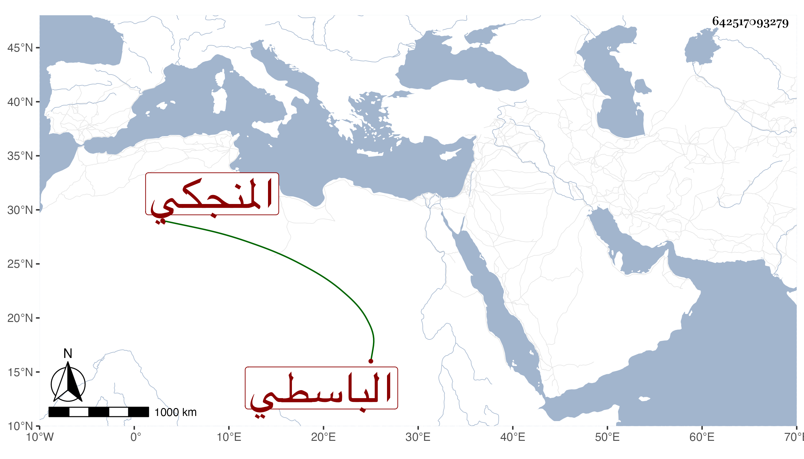

0902Sakhawi.DawLamic.ITO20230111-ara1.EIS1600.642517093279
Biography ID: 642517093279
864
محمد بن إبراهيم بن أحمد الشمس المنجكي الباسطي ويعرف هو وأبوه بأبي الهائم . ولد في شعبان سنة ست وثلاثين وثمانمائة ونشأ يتيما . مات أبوه وهو ابن ست فقرأ القرآن وتعانى التكسب في الجوهريين والأذان بالبيمارستان وغيرها وخالط الناس بالمعاملة ، وحج غير مرة وجاور وأثرى . مات بعد أن أوصى باشتراء عقار يوقف على بعض الجهات الصالحة في سنة تسع وثمانين عفا الله عنه . )
